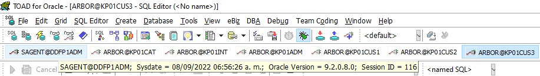

Servidores de Producción
| Servidor | Base de Datos | Nombre del Servidor | Ip de Servicio | VLAN | Ip Administrativa | VLAN |
|---|---|---|---|---|---|---|
| KDM | Servidor de Aplicación | srvft20 | 161.196.11.181 | 53 | 10.0.0.126 | 701 |
| KDM | Servidor de Aplicación | srvft25 | 161.196.189.184 | 10.0.0.16 | ||
| KENAN | Servidor de Aplicación | srvft01 | 161.196.11.138 | 53 | 10.0.12.16 | 697 |
| KENAN (Catalogo de Interfaces) |
Servidor Base de Datos | srvft02 | 161.196.11.143 | 53 | 10.0.0.122 | 699 |
| CUS1 | Servidor Base de Datos | srvft03 | 161.196.11.144 | 53 | 10.0.0.123 | 699 |
| CUS2 | Servidor Base de Datos | srvft04 | 161.196.11.145 | 53 | 10.0.0.124 | 699 |
| CUS3 | Servidor Base de Datos | srvft05 | 161.196.11.146 | 53 | 10.0.0.125 | 699 |
| GENERATE y DATA FLOW (Masivo/IDOC |
Servidor de Aplicación | srvft30 | 161.196.11.194 | 53 | 10.1.95.39 | 699 |
| GENERATE y DATA FLOW (Corporativo/Medio Magnetico) |
Servidor de Aplicación | srvft31 | 161.196.11.195 | 53 | 10.0.0.129 | 699 |
| Ondemand | Servidor de Aplicación | 161.196.25.6 |
Servidores de Producción
| Servidor | Usuario | Password | Base de Datos |
|---|---|---|---|
| SRVFT01 | kbpp01 / kbpltp | adm_F4CT | SAGENT@DDFP1ADM / ARBOR@KP01ADM / ARBOR@KP01CAT ARBOR@KP01INT / ARBOR@KP01CUS1/2/3 |
| SRVFT20 | appadm | Cantv_2010 | |
| SRVFT25 | appadm | Cantv_2010 | |
| SRVFT30 | ddfp01 | system_2008 | |
| SRVFT30 | ddfp02 | system_2008 | |
| SRVFT30 | ddfp03 | system_2008 | |
| SRVFT30 | ddfp04 | system_2008 | |
| SRVFT30 | ddfp05 | system_2008 | |
| SRVFT30 | ddfp06 | system_2008 | |
| SRVFT31 | ddfp01 | Cantv123 | |
| SRVFT31 | ddfp02 | system_2008 | |
| SRVFT31 | ddfp03 | system_2008 | |
| SRVFT31 | ddfp04 | system_2008 | |
| SRVFT31 | ddfp05 | system_2008 | |
| SRVFT31 | ddfp06 | system_2008 |
Rutas
| Servidor | Proceso | Ruta |
|---|---|---|
| srvft01 | CFTSGUD001 (brsgkbpb) Segmentador | /prg/kbpp01/interfaces/insumos/BRSGKBPB/log |
| srvft01 | archivos en Ready - Tasacion - Insumos | /appl/kbpp01/data/usage/ready |
Base de Datos
